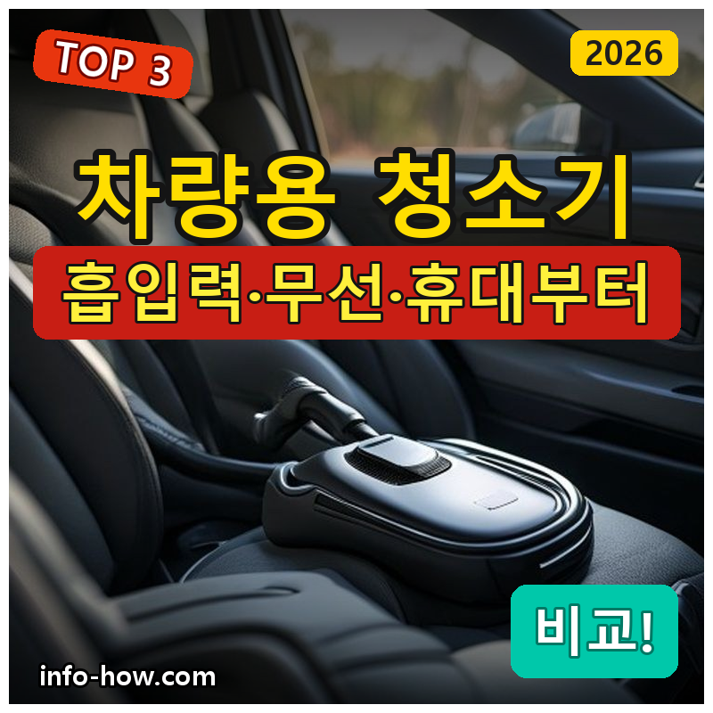
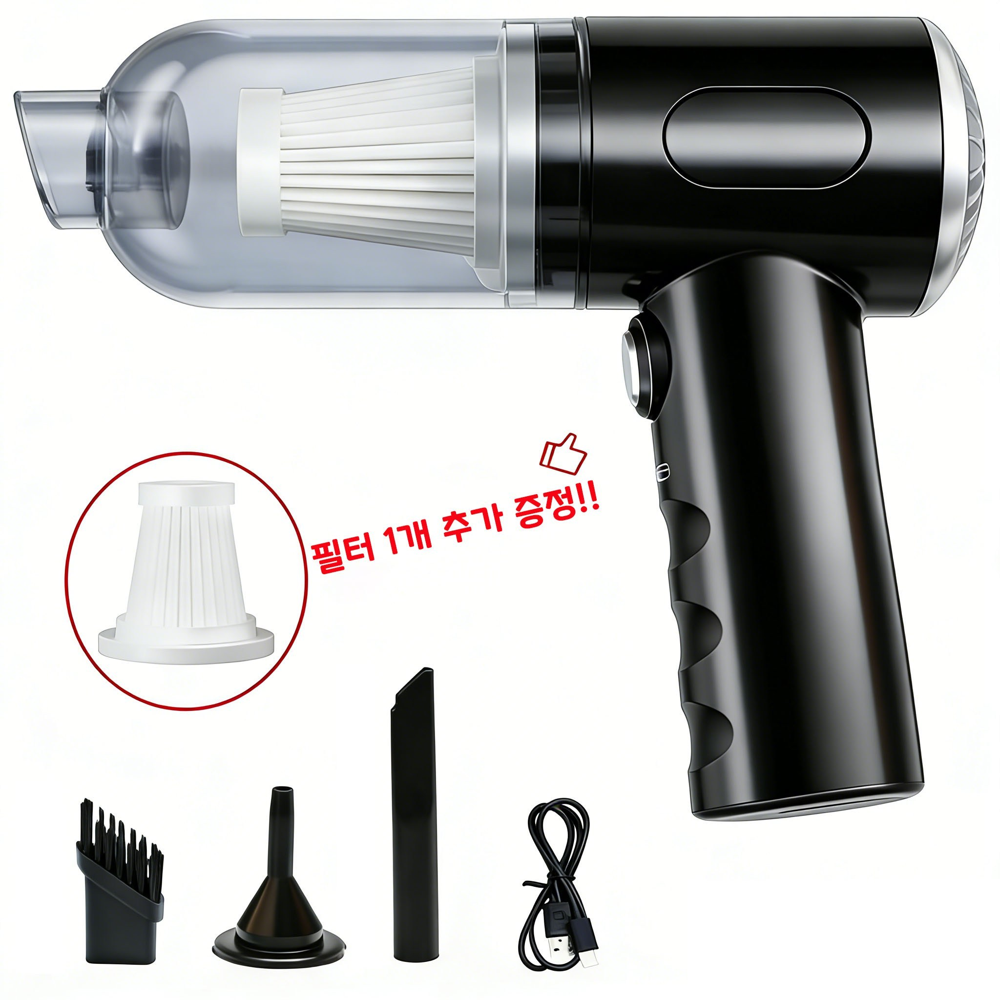
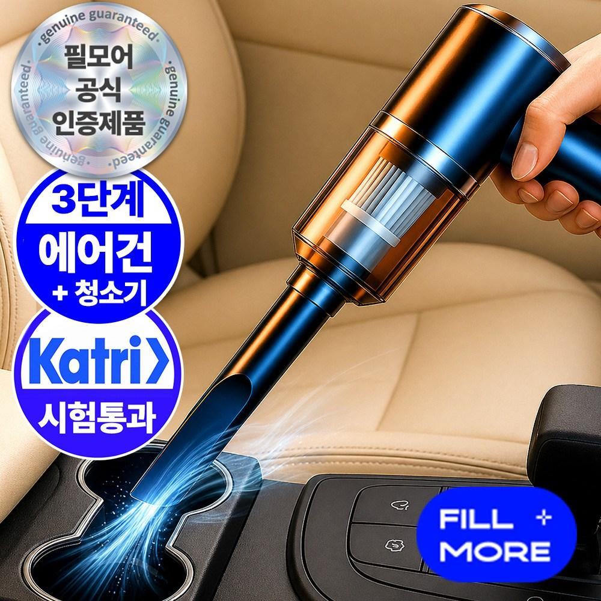
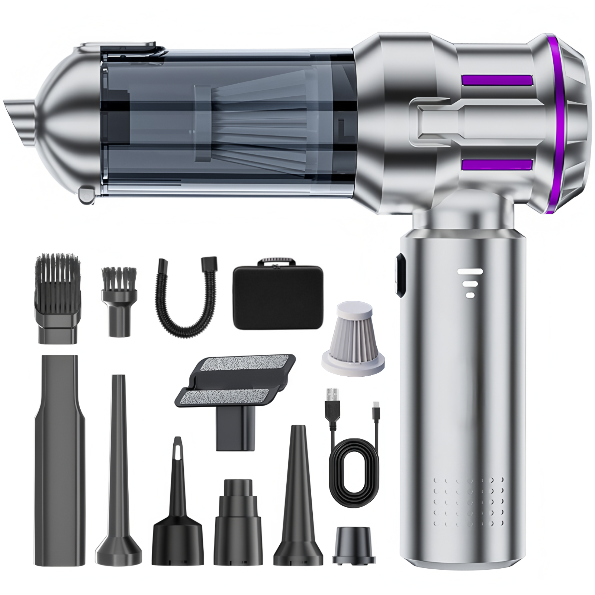

홈 › 제품리뷰 › 디지털/IT
차량용 청소기, 가성비냐 강력 흡입이냐
작성: 생활서식 모음 · 2026-08-22

파트너스 활동의 일환으로 일정액의 수수료를 지급받습니다
🛒 오늘의 쿠팡 특가 보러가기 →
차량용 청소기, 차 안 먼지·부스러기 치우려는데 뭘 살까요?
핵심은 "흡입력과 무선(편의), 휴대" 3대 를
"저렴한 핸디" "강력한 흡입" "고성능 BLDC"용도별 정답 까지 담았으니
📋 목차
차량용 청소기, 가성비냐 강력 흡입이냐 — 결론 먼저 스펙 비교표: 한눈에 보기 차량용 청소기 고를 때 봐야 할 3가지 가성비냐 고성능이냐, 뭘 사야 할까? 자주 묻는 질문 (FAQ) 결론: 한 줄 요약
차량용 청소기, 가성비냐 강력 흡입이냐 — 결론 먼저
차량용 청소기는 "흡입력과 무선 편의" 로 갈려요.가성비 핸디 , 확실한 흡입이면 강력 흡입 , 고성능·가정 겸용이면 BLDC 가 무난합니다.
1 가성비·간편 (가성비 초이스)
가성비

가성비 핸디
1. 디에스가추몰 무선 핸디 청소기 (차량·가정 겸용)
강력 흡입·BLDC는 아니어도
추천 대상
차 안 부스러기를 저렴하게 치우려는 분 무선 핸디로 가볍게 쓰려는 분 차량·가정 겸용을 원하는 분 장점
9천원대로 부담 없이 차량 청소기 마련 무선 핸디라 차 안 어디든 가볍게 사용 가정 겸용이라 책상·소파에도 활용 단점
이 제품은 가성비·간편용 입니다. 확실한 흡입이면 2번, 고성능이면 3번 BLDC로 가세요. "가벼운 부스러기"면 가성비 좋아요.
한줄 리뷰
"차 안 부스러기를 저렴하게"면 핸디가 무난합니다. 가벼워요. 강한 흡입·고성능이면 2·3번을 보세요.
주요 스펙
제품: 디에스가추몰 무선 핸디 청소기 기능: 무선·겸용 용도: 차량·가정 배송: 로켓배송 가격: 약 9,500원 (변동 가능) ※ 실제 스펙·가격과 차이가 있을 수 있습니다
2 흡입력·실속 (베스트 초이스)
베스트

강력 흡입
2. 필모어 초강력 휴대용 무선 진공 청소기
확실한 흡입력으로
추천 대상
부스러기뿐 아니라 먼지·모래도 확실히 치우려는 분 가성비 이상의 흡입력을 원하는 분 차량 청소를 자주 하는 분 장점
초강력 흡입이라 시트 틈·바닥 먼지까지 흡입 무선·휴대라 차 안 구석구석 편하게 사용 가성비 대비 확실한 성능 단점
최고 흡입력·가정 겸용 성능은 3번 BLDC가 낫다 저렴한 핸디면 1번, 고성능이면 3번 BLDC입니다. 2번은 "강력 흡입" 의 실속 구간 — 차량 청소에 가장 무난합니다.
한줄 리뷰
"먼지·모래까지 확실하게"면 필모어가 좋습니다. 흡입력이 든든해요. 최고 성능이면 3번을 보세요.
주요 스펙
제품: 필모어 초강력 휴대용 무선 진공 청소기 기능: 강력 흡입·무선 용도: 차량 배송: 로켓배송 가격: 약 29,000원 (변동 가능) ※ 실제 스펙·가격과 차이가 있을 수 있습니다
3 고성능·겸용 (프리미엄)
프리미엄

고성능 BLDC
3. RichMagic 16000pa BLDC 무선 청소기 (3단 조절)
16000pa BLDC 대흡력으로
추천 대상
가장 강한 흡입력을 원하는 분 차량·가정·반려동물까지 두루 쓰려는 분 BLDC 모터의 내구·성능을 원하는 분 장점
16000pa 대흡력이라 강력하게 흡입 BLDC 브러시리스 모터로 내구·효율이 좋음 3단 조절·멀티 용도로 활용도가 높음 단점
가벼운 부스러기만이면 오버스펙이고 가격이 있다 저렴한 핸디면 1번, 강력 흡입 실속이면 2번이 합리적입니다. 3번은 16000pa BLDC 고성능 이 필요한 분에게 값어치가 있습니다.
한줄 리뷰
"가장 강한 흡입력으로 차·집·반려동물까지"면 RichMagic이 강력합니다. 하나로 다 돼요. 가벼운 용도면 1·2번이 합리적입니다.
주요 스펙
제품: RichMagic 16000pa BLDC 무선 청소기 흡입력: 16000pa · BLDC 특징: 3단 조절 · 멀티 배송: 로켓배송 가격: 약 96,850원 (변동 가능) ※ 실제 스펙·가격과 차이가 있을 수 있습니다
스펙 비교표: 한눈에 보기
가격·풍량·무게 중 본인에게 중요한 기준부터 보세요. "최고" 표시는 3제품 중 객관적 1위 값입니다.
← 좌우로 스크롤 →
차량용 청소기 고를 때 봐야 할 3가지
흡입력·무선만 봐도 후회가 적습니다.
1) 흡입력(Pa) — 세정력
부스러기 위주면 낮아도 되지만 먼지·모래면 강해야 함 Pa(파스칼) 수치가 높을수록 흡입이 강함 BLDC 모터면 같은 크기에 흡입·효율이 좋음 2) 무선·배터리 — 편의
무선이라야 차 안 구석구석 편하게 청소 한 번 충전 사용 시간(러닝타임) 확인 충전 방식(USB-C 등)도 참고 3) 노즐·필터 — 활용
틈새·브러시 노즐이 있으면 시트 틈·구석 청소가 편함 필터 세척·교체가 쉬운지 확인 먼지통 용량·비우기 편의도 참고 가성비냐 고성능이냐, 뭘 사야 할까?
청소 대상과 빈도만 정하면 답이 나옵니다.
가성비·간편: 1번 디에스 핸디 → 부스러기흡입력·실속: 2번 필모어 → 먼지·모래고성능·겸용: 3번 RichMagic → 차·집·애견자주 묻는 질문 (FAQ)
Q1. 차량용 청소기 흡입력(Pa)은 얼마나 필요한가요? 용도에 따라 다릅니다. 과자 부스러기·먼지 위주면 비교적 낮은 흡입력으로도 충분하지만, 모래·머리카락·반려동물 털까지 확실히 치우려면 흡입력(Pa)이 높은 제품이 좋습니다. 표기된 Pa 수치와 실제 후기를 함께 참고하고, 자주·꼼꼼히 청소한다면 강한 흡입력을 권합니다.
Q2. 유선과 무선 차량용 청소기 중 뭐가 나은가요? 편의는 무선, 지속 사용은 유선입니다. 무선은 시거잭·선 없이 차 안 어디든 편하게 쓰지만 배터리 시간에 한계가 있고, 유선(시거잭)은 계속 쓸 수 있지만 선이 거치적거립니다. 간편함·이동이면 무선, 오래 한 번에 청소하면 유선이 어울립니다. 요즘은 무선 고성능 제품이 많아 인기입니다.
Q3. 차량용 청소기로 물기도 빨아들일 수 있나요? 건습식(웻앤드라이) 표기가 있어야 가능합니다. 일반 청소기는 마른 먼지·부스러기용이라 물·음료를 빨아들이면 고장 위험이 있습니다. 물기를 치우려면 건습식 겸용 제품인지 확인하세요. 표기가 없으면 마른 이물만 청소하는 것이 안전합니다.
Q4. BLDC 모터가 뭐가 좋은가요? 흡입 효율과 내구가 좋습니다. BLDC(브러시리스 DC) 모터는 마찰 부품이 적어 발열·마모가 적고, 같은 크기에서 더 강한 흡입력과 긴 수명을 냅니다. 그래서 고성능 무선 청소기에 많이 쓰입니다. 강한 흡입력과 오래 쓰는 내구를 원하면 BLDC 모터 제품이 유리합니다.
Q5. 필터 관리는 어떻게 하나요? 주기적으로 비우고 세척하면 흡입력이 유지됩니다. 먼지통을 자주 비우고, 필터에 먼지가 쌓이면 흡입력이 떨어지므로 물세척 가능한 필터는 씻어 말려 쓰세요. 필터가 소모품인 경우 주기적으로 교체하면 성능이 유지됩니다. 제품별 필터 관리 방법을 확인하세요.
결론: 한 줄 요약
1) 디에스 핸디 — 약 9,500원 / 가성비·간편. 저렴+겸용.2) 필모어 강력흡입 — 약 29,000원 / 흡입력·실속. 먼지·모래.3) RichMagic 16000pa — 약 96,850원 / 고성능·겸용. BLDC.이 포스팅은 쿠팡 파트너스 활동의 일환으로, 이에 따른 일정액의 수수료를 제공받습니다.